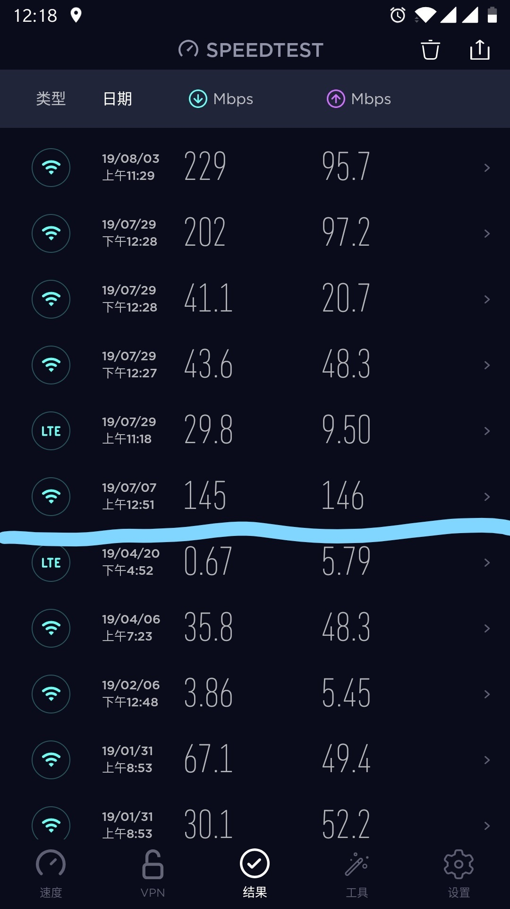

百兆网线遇见千兆入户。
注1：唠嗑和吐槽居多，想学到什么东西大概不现实（逃
注2：前面很大的篇幅都是在介绍家里网络的演进，不想看的话可以直接跳到参数起底部分
开始的时候
在很久以前，没有“提速降费”的黑暗年代里，我在家里一直用着广电和移动给穷人提供的小水管宽带。十多年来，网速从2Mbps磕磕绊绊提升到了2019年中旬的50Mbps。
那个时候，家里的网络结构大概是这个样子的：

有两个地方需要大概说一下。
这图是用Visio画的，虽然用的是最新的2019版本，但是我依然没有找到任何类似于无线路由器的图标。从原理上讲，我们称呼为“无线路由器”的这个东西其实是极简路由器+交换机+无线AP的组合，这三个设备由厂家帮我们塞进了一个壳子里，所以在这里我也就画成三样东西的组合了。当然，如果有同学知道Visio怎么画出无线路由器，也可以在评论里告诉我（尽管tkl大佬指出我还没有评论区）。
手机用Wi-Fi上网，为什么电脑用的也是Wi-Fi呢？因为之前家里的台式电脑和无线路由器都放在客厅里，只不过分别位于两侧。这种情况下如果在客厅中间走一根网线那实在不够优雅，考虑到中间没有任何障碍物，所以台式机也就用无线网卡上网了（淘宝爆款300M无线网卡）。
当时还是网络小白的我用着这套极简组网方案（一共只有一个猫和一个路由器，路由器甚至直接了WAN口），虽然总是隐隐觉得网速不怎么好，但毕竟能用嘛，也就没有多考虑。
事情变得复杂起来
除了一台主力台式机以外，家里还有一台退役的老台式。为了解决我和我爸同时占用电脑的问题，我们决定把老的台式机升级一下硬件继续用起来，位置呢在主卧里。家里的户型是L型的，之前的路由器和老台式机分别在L的两端，中间隔着两堵墙，无线方案行不通。还好装修的时候在墙里预留了网线，我只要去入户信息箱里找到那根网线然后手工压上水晶头就行（信息箱乱得很，辱骂装修施工队），老台式机成功有线连网。
这时候，爸妈在手机上上网的频率也高了起来，日益增长的网络需求同不充分的无线网络部署之间的矛盾凸显。为了初步解决这个问题，我又在主卧里接上了第二个淘宝爆款路由器，和客厅的主路由器形成级联。

淘宝爆款路由器很智能地为我划分了网段，客厅路由器位于192.168.1.0/24，主卧路由器位于192.168.2.0/24。
其实这套更新过的组网方案多少已经有了些问题，例如主卧内部二级路由的出现，导致连在二级路由上的设备无法在客厅主路由下访问。好在当时我也没有这种互访的需求，只要网络覆盖面积大了，那就皆大欢喜。
再往后我进了大学，次卧里的书桌上终于不用再堆满文具。在我报到之前，客厅的台式被移到了次卧里，好处是客厅变得宽敞了一些，坏处是隔了一堵墙的无线信号简直无法忍受。此外，我还新买了一台Surface，微软的无线网卡使用体验的确远高于淘宝爆款：同样隔墙，Surface可以正常上网，台式机却经常掉线。

原谅我在图里用了防火墙的图标，但是这堵墙对Wi-Fi的阻隔效果和防火墙实在没差！
大跃进
大二暑假去NUS游学了大半个月，肉身翻墙感受到的国外互联网确实让我赞叹。7月4号到的新加坡，从此我体验过的网络速度有了数量级上的飞跃。

本来还在可惜回国以后就享受不到又快又好的网络了，没想到回国的第二天移动给我打了个电话，说是家里的网络可以以非常便宜的价格升级到200M。有这种机会当然是不能错过的，移动的工程师第三天就到了我们家里来（感谢提速降费！）。
经过一番升级，入户宽带提升到了200M、有线猫换成了光猫、客厅路由器换成了华为WS5200增强版。客厅的老路由器运行不太稳定，直接被我扔了。

新的路由器同时支持2.4GHz频段和5GHz频段。在可以直视路由器的地方，200M的网速妥妥的；只要一隔着墙，由于无线网卡老化和穿墙两重因素的影响，实际体验感人。2.4GHz的信号可以稳定穿墙，但是速率大打折扣，200M变成20M；5GHz的信号过了堵墙就变得虚无缥缈了，实际体验比2.4GHz下更糟糕。
暑假在家时间很短，还没有来得及处理这个问题就返校了。
参数起底
大二下学期学完了计网，加上寒假回家后由于新冠疫情的问题只能在家里呆着，糟糕的网络情况让人烦躁，所以直到最近我才真正着手升级家里的局域网。
我的首要升级目标是在全家范围内实现千兆互联。在这之前，我需要对家里的所有网络设备有一个细致的了解。
爆款无线路由器
我最先关注到的是爆款无线路由器，这个设备很早以前就存在了，十分可疑。路由器的型号是TL-WR886N，说实话名字不怎么吉利。打开TP-LINK的产品介绍页，我们可以看到这款路由器支持的无线协议是802.11b/g/n，也就是非常标准的Wi-Fi 4；支持的有线协议是802.3u，也就是100Mbps以太网。查看维基百科的IEEE 802.11条目，发现802.11n下一条流的最大速率是150Mbps，原来标称的450M网速是通过三根天线进行3*3 MIMO达到的。
这路由器简直可以进入迷惑行为大赏！有线连接最高速率只有100Mbps，但是无线连接的速率却到了450Mbps，也不知道我的无线设备们怎么才能用完这四倍于有线的无线速率，难道天天在手机之间互相拷贝文件吗。当然，前面的吐槽是建立在设备能达到标称速率的基础上的，实际上我不管用什么设备去连接这个路由器，最高都只能达到72Mbps，也就是20MHz的频带下1*1 MIMO的速度。
由于有线连接上的速率限制，加上不支持Wi-Fi 5，这款老设备肯定是无法满足千兆网络的要求的，所以我也只能对TL-WR886N说一声886。
移动无线路由光猫
移动送的光猫虽然是新设备，但是行为也十分可疑。猫的型号是ZXHN F663NV3a，是中兴为中国移动提供的定制型号，在转换光信号之外还支持了无线路由器的功能。看起来买一送一是赚爆，但真相总是男默女泪。
首先登陆进这个光猫，不得不说在0202年看到下面这种登陆界面，视觉冲击力满分。
默认的用户名和密码在光猫底部，进去以后兜兜转转看了半天，实在不知道光猫里除了Wi-Fi SSID还有什么东西能让我设置。当然，这台光猫的迷惑行为远不止这一处。
由于光猫包含了路由器的功能，所以背部就像普通路由器那样，是有四个LAN口的。千兆光猫的LAN口总应该是全千兆了吧，事实证明我naive了，因为四个LAN口只有一个是千兆的，剩下三个都是百兆的。
光猫自带的Wi-Fi功能倒是不比前面的爆款路由器差多少，支持Wi-Fi 4标准、最高2*2 MIMO，偶尔能有150M的连接速度。
我寻思这光猫节约成本的方式也是让人叹为观止。但是回过头来想，这种配置好像大部分家庭的需求都是无法满足的，那又何苦在里面花钱内置路由器呢，实在疑惑。 我错了，大部分家庭不会在意这些东西。
华为WS5200增强版
滑稽为这款路由器是移动的宽带工程师推销给我的，当时急着想体验200M的网络就买了，价格合理实际体验也让人满意。
路由器背板上的网线接口是全千兆的；而无线方面，路由器一共配备了四根天线，2.4GHz和5GHz各两根，所以总的无线速率是2*150Mbps+2*433Mbps=1167Mbps（尽管我觉得这种标识有夸大之嫌，但没办法大家都这么标），我的手机和电脑在5GHz的Wi-Fi 5下也都能享受到2*433Mbps=866Mbps的速率。
升级
升级的思路是优先满足千兆速率和全家覆盖两个要求，允许的情况下我还希望能实现设备互访和无线漫游。
一番规划后，我决定使用一台新路由器和一台千兆交换机实现速率和覆盖的要求。
前面弃用老路由器的决定导致家里网络覆盖面积少了一半，所以我首先需要购置一台新的路由器来满足网络的全家覆盖（什么，你说AP？那也太贵了！）。洋垃圾路由器是我中意很久的一个选择，在学校里就有人买了一台网件洋垃圾，强大的功能给我留下了深刻的印象。最终我选择了Cisco EA6700这一型号，国际大厂、老板代刷梅林固件、只要250多，是真的赚。
同时为了解决隔墙Wi-Fi衰减的问题，我直接把华为路由器搬到了次卧，通过墙内走线连上光猫唯一的千兆口，一次性解决次卧内的网络连接问题（再次辱骂施工队留下的混乱信息箱）。至于客厅的无线网，就暂时用光猫上的Wi-Fi了。
由于光猫上唯一的千兆口被占用，要让新购买的路由器也能享受千兆速率只能再增加一个千兆交换机。狗东上搜索出来一个H3C的桌面五口全千兆交换机，正好打折百元入手。
硬件升级完后，家里的网络拓扑变成了这个样子。

拿ipref3测试了一下网速，有线速度全部在950Mbps左右，主卧和次卧的无线连接速度在250~350Mbps，都属于正常范围（为什么有线都不能到1Gbps？当然是因为overhead啦！）。
至于设备互访，我们通常有两种方案。高级的方法当然是在路由器上设置静态路由，这样可以让子网间互不干扰。可事实上三个路由器中只有Cisco EA6700可以让我这么设置，所以这个方法行不通。
第二种方法是把路由器设置为桥接模式（相当于弃用路由功能，把路由器变成交换机和AP的组合体），正巧Cisco EA6700和华为WS5200都有快捷的桥接模式开关，一键设置完成。这样设置后，家里相当于只剩下了三个交换机，整个网络合并成了一个子网，自然任意两个设备都能互访。

另外这还带来一个好处：由于两个二级路由的DHCP服务器都被关闭，所以所有设备的IP地址都由光猫分配（只有你不能设置关闭DHCP好吗！要能关我肯定让洋垃圾路由器负责DHCP！）。同一个设备拿着同一个MAC地址在全家任意地方接入，都会分配到固定的IP地址。
关于设备漫游，这套硬件的确是实现不了。虽然看起来整个网络中有唯一的DHCP服务器，并且可以通过把所有AP的SSID和密码设置为相同的值来实现手机的自动选网，但这种方案会因为各种原因导致体验糟糕。目前实用的方案有AC+AP和Mesh两种，这两种都是土豪方案并不适合我，这里就不介绍了。
后记
花了一周时间和350块把家里的网络从百兆一部升级到了千兆。尽管这套方案还有一些小问题，但是这也让我十分舒适了。
下面的话，我可能会在交换机和光猫之间加再一级路由器，用来接管整个网络的IP分配，毕竟现在的光猫DHCP完全不受我控制。这级新的路由器上还能部署代理和离线下载等服务，扩展整个局域网的服务提供能力。
2020/03/11
- 做了一些微小的修改工作
2020/02/14
- 发布这篇文章